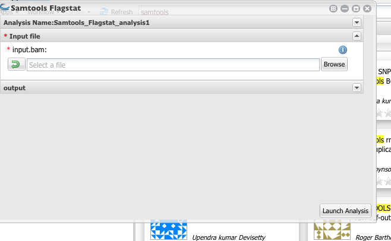

Counting mapped reads¶
To get the number of reads mapped to a reference sequences (in this case, predicted tomato cDNA sequences), we can use Samtools. Bowtie2 output is in sam format and first, we need to convert the output files into sorted bam files.
- Type Samtools in app finding window.

- Select “SAM to sorted BAM”

- Select Bowtie2 output files (SAM format).

4. Above will create sorted bam file. You will need to use this as the input for the Samtools Flagstat, which will count the number of mapped reads.


I have used the following bash command to count mapped reads in case you are interested in it doing programmatically.
# navigate to where your sam files are and execute the following commands.
for i in *.sam
do
#extract the file name without extension and print it to the screen
echo ${i%.sam}
#covert sam to sorted bam
samtools view -bS $i | samtools sort - -o ${i%.sam}_sorted.bam
#getting flagstat and write it an output file for each bam file.
samtools flagstat ${fname%.sam}_sorted.bam >> flagstat.txt
done